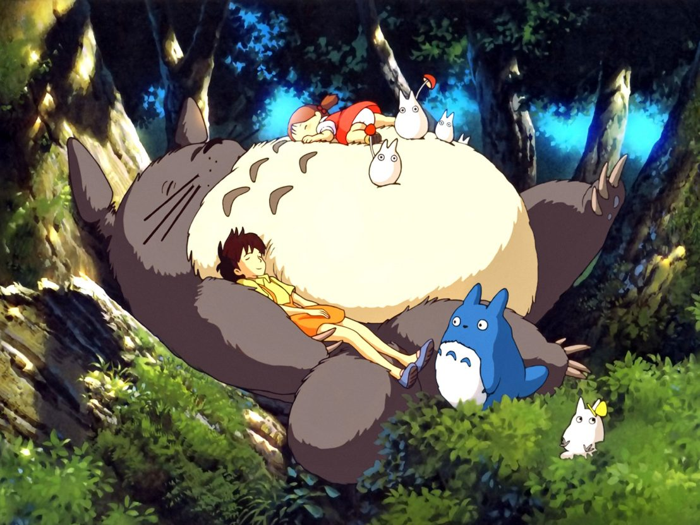
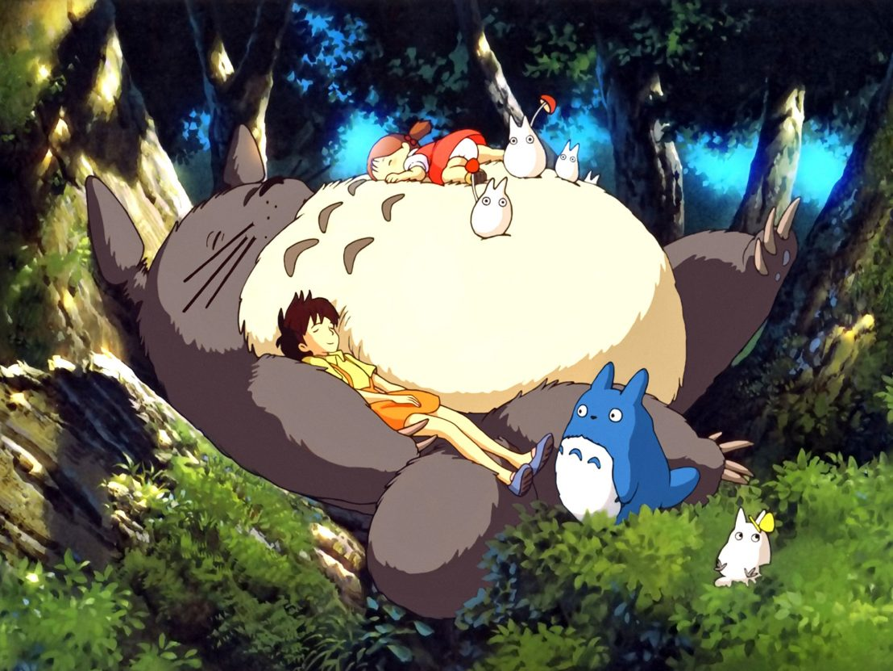
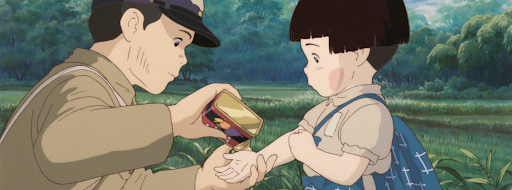
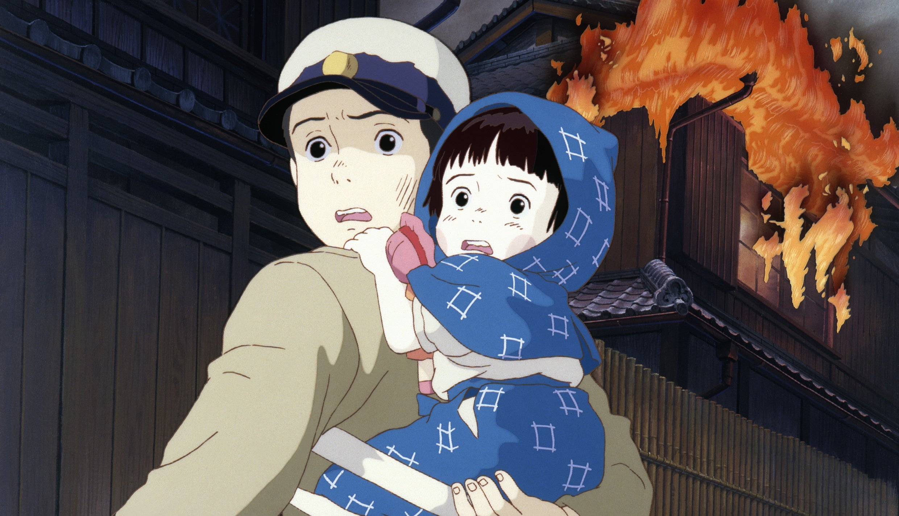

Castle In The Sky - 1986
In a small mining town, an orphaned teenage boy named Pazu finds and
catches a teenage girl floating from the sky named Sheeta. When she
awakens the next day she tells him that she is being chased by pirates
and the government who are after her crystal necklace that is
connected to the floating city of Laputa. It's now up to our two
protagonists to find the city before the Government and pirates can
find them and unlock the secret of Laputa and Sheeta's connection to
the floating city.
Review: 8/10

Movie Quotes:
"No matter how many weapons you have, no matter how great your
technology might be, the world cannot live without love."
"There is nothing quite so pure in love as a boy and a girld
building castles in the sky."
"You don't need planning permission to build castles in the sky."
My Neighbor Totoro - 1988
It is 1958 in Japan. Two young girls, 10-year-old Satsuki and her
4-year-old little sister Mei, move into a house in the country with
their father to be closer to their hospitalized mother. Satsuki and
Mei discover that the nearby forest is inhabited by magical creatures
called Totoros. They soon befriend these Totoros, and have several
magical adventures.
Review: 8,2/10
 

Movie Quotes:
"Reality is for people that lack imagination."
"The creation of a single world comes from a huge number of
fragments and chaos."
Grave of the Fireflies - 1988
Seita (14 years old) Setsuko (4 years old) and are brother and sister
living in wartime Japan. After their mother is killed in an air raid
they find a temporary home with relatives. Having quarreled with their
aunt they leave the city and make their home in an abandoned shelter.
While their soldier father's destiny is unknown, the two must depend
on each other to somehow keep a roof over their heads and food in
their stomachs. When everything is in short supply, they gradually
succumb to hunger and their only entertainment is the light of the
fireflies.

Review: 8,5/10


Movie Quotes:
"We find things about ourselves in the darkness that we are unable
to discover in the light."
"Why must fireflies die so young?"
"I don't need anything. Please stay home with me. Don't go!"
Kiki's Delivery Service - 1989
Kiki, a teenage witch-in-training, has reached the age of 13.
According to tradition, all witches of that age must leave home for
one year, so that they can learn how to live on their own. Kiki, along
with her talking cat Jiji, fly away to live in the seaside town of
Koriko. After starting her own delivery service, using her broom as
the delivery vehicle, Kiki must learn how to deal with her new life,
especially after she loses the power to fly.
Review: 7,8/10
Movie Quotes:
"We need to find our own inspiration. Sometimes it's not easy."
"Maybe I can stay and find some other nice people who will take me
and accept me for who I am."
"Just follow yout heart and keep smiling."
Only Yesterday - 1991
In 1982, Taeko is 27 years old, unmarried, has lived her whole life in
Tokyo and now works at a company there. She decides to take another
trip to visit the family of the elder brother of her brother-in-law in
the rural countryside to help with the safflower harvest and get away
from city life. While traveling at night on a sleeper train to
Yamagata, she begins to recall memories of herself as a schoolgirl in
1966, and her intense desire to go on holiday like her classmates, all
of whom have family outside of the big city. She begins to face her
own true self, how she views the world and the people around her.
Review: 7,7/10
Movie Quotes:
"If today's no good, you'll have tomorrow. If tomorrow's no good,
you'll have the next day."
"But we'll never lose heart. We hat to cry so let's laugh
instead."
"You make me wonder if I even exist."
Whisper Of The Heart - 1995
14-year-old teenage bookworm Shizuku lives a simple life, dominated by
her love for stories and writing. One day she notices that all the
library books she has have been previously checked out by the same
person: 'Seiji Amasawa'. Curious as to who he is, Shizuku meets a boy
of her age whom she finds infuriating, but discovers to her shock that
he is her 'Prince of Books'. As she grows closer to him, she realises
that he merely read all those books to bring himself closer to her.
The boy, Seiji, aspires to be a violin maker in Italy, and it is his
dreams that make Shizuku realise that she has no clear path for her
life. Knowing that her strength lies in writing, she tests her talents
by writing a story about Baron, a cat statuette belonging to Seiji's
grandfather.
Review: 8/10
Movie Quotes:
"Now it's like someone whispering in my heart saying that I can't
go on like this."
"What if I look inside myself and I don't find any gems?"
"There is no need to be upset. Just have a little patience."
Princess Mononoke - 1997
While protecting his village from rampaging boar-god/demon, a
confident young warrior, Ashitaka, is stricken by a deadly curse. To
save his life, he must journey to the forests of the west. Once there,
he's embroiled in a fierce campaign that humans were waging on the
forest. The ambitious Lady Eboshi and her loyal clan use their guns
against the gods of the forest and a brave young woman, Princess
Mononoke, who was raised by a wolf-god. Ashitaka sees the good in both
sides and tries to stem the flood of blood. This is met by animosity
by both sides as they each see him as supporting the enemy.
Review: 8,5/10
Movie Quotes:
"What I want is for the humans and the forest to live in
peace."
"You cannot alter your fate. However, you can rise to meet it."
"Cut off a wolf's head and it still has the power to bite."
Spirited Away - 2001
10-year-old Chihiro and her parents are riding along during a family
outing through the countryside when they stumble across an amusement
park that has seemingly been abandoned for years. Despite Chihiro's
premonitions about the creepy setting, her parents explore the area
and eventually discover and indulge in an empty eatery filled with
fresh food. As a result of their unfaithfulness, they are magically
turned into pigs, which in turn scares away Chihiro. She meets the
enigmatic Haku, who explains to her that this land is actually a
magical bath house, a kind of holiday resort, where supernatural
beings seek comfort away from the earthly realm and she must work
here, as laziness is not permitted, to free both herself and her
parents from the mystical land.

Review: 9/10
Movie Quotes:
"Once you have met someone, you never really forget them."
"I finally get a bouquet and it's a goodbye present. That's
depressing."
"Once you do something, you never forget. Even if you can't
remember."
Howl's Moving Castle - 2004
A love story between an 18-year-old girl named Sophie, cursed by a
witch into an old woman's body, and a magician named Howl. Under the
curse, Sophie sets out to seek her fortune, which takes her to Howl's
strange moving castle. In the castle, Sophie meets Howl's fire demon,
named Karishifâ. Seeing that she is under a curse, the demon makes a
deal with Sophie - if she breaks the contract he is under with Howl,
then Karushifâ will lift the curse that Sophie is under, and she will
return to her 18-year-old shape.

Review: 8/10
Movie Quotes:
"Trying to catch your heart is like trying to catch star."
"I've got something I want to protect. It's you."
"They say that the best blaze burns brightest when circumstances
are at their worst."
The Secret World Of Arrietty - 2010
Arrietty, a tiny, but tenacious 14-year-old, lives with her parents in
the recesses of a suburban garden home, unbeknownst to the homeowner.
Like all little people, Arrietty remains hidden from view, except
during occasional covert ventures beyond the floorboards to "borrow"
scrap supplies from her human hosts. But when 12-year-old Shawn, a
human boy who comes to stay in the home, discovers his mysterious
housemate one evening, a secret friendship blossoms. If discovered,
their relationship could drive Arrietty's family from the home and
straight into danger.
Review: 7,5/10
Movie Quotes:
"Ny heart is stronger now that you're in it."
"It's funny how yoz wake up each day and never really know if it
will be the one that will change your life forever."
"When I saw you I just wanted to find a way to protect you."
From Up On Poppy Hill - 2011
The story is set in Yokohama, Japan in 1963. In preparation for the
next year's Tokyo Summer Olympics, people are destroying the old
things because they believe only in the magnificence of the new. A
16-year-old girl, Umi, lives in the boarding house called "Coquelicot
Manor", which is located on the hill overlooking the harbour of the
Port of Yohohama in Japan. Each morning, she raises a set of signal
flags with message "I pray for safe voyages". A 17-year-old boy, Shun,
always sees this flag from the sea as he rides a tugboat to school.
Gradually Umi and Shun are drawn to each other, but a sudden obstacle
appears: Shun finds out that they might be a familiar secret between
the two.
Review: 7,5/10
Movie Quotes:
"There's no future for people who worship the future and forget
the past."
"Destroy the old and you destroy our memory of the past."
"We forgot whatever it was we felt about each other."
When Marnie Was There - 2014
The film follows Anna Sasaki living with her relatives in the seaside
town. Anna comes across a nearby abandoned mansion, where she meets
Marnie, a mysterious girl who asks her to promise to keep their
secrets from everyone. As the summer progresses, Anna spends more time
with Marnie, and eventually Anna learns the truth about her family and
foster care.
Review: 7,5/10

Movie Quotes:
"I can't expect myself to change in one day."
"I remember. And you're my secret."